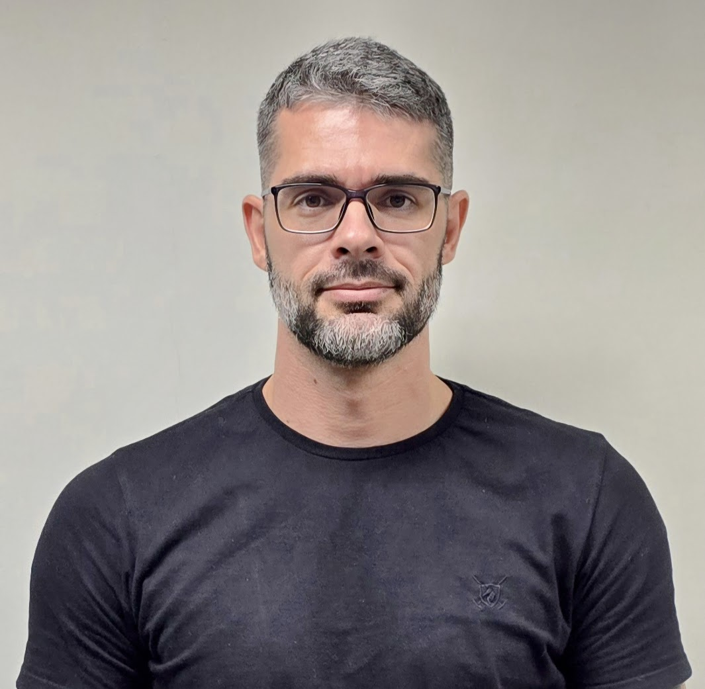

Alexandre José Lima Miranda
- Bombeiro Militar - 2008
- Técnico Bancário Novo - 2008 - hoje
- Formado em Direito pela Universidade Federal de Alagoas
Tenho 41 anos, sou casado, sem filhos. Moro em Maceió-AL, pratico musculação e ciclismo há anos. Gosto muito de viajar, tenho paixão por motos esportivas e gosto muito de tecnologia. Resolvi aceitar o convite da caixa e aprender algo novo. O caixaverso foi o ponto de início desse aprendizado. Venho gostando bastante e procurando outras fontes de aprendizado. Espero dominar bem esse conteúdo e, se possível, aproveitar esse conhecimento na CAIXA e como dev freelancer.